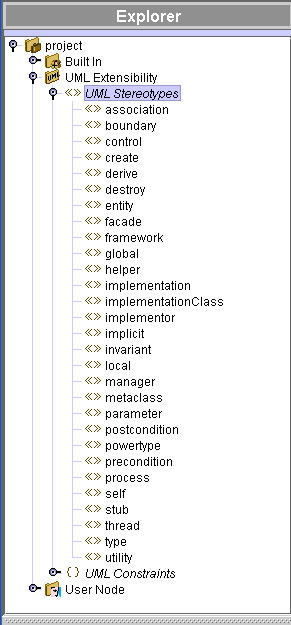
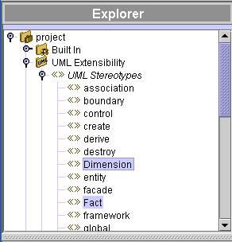
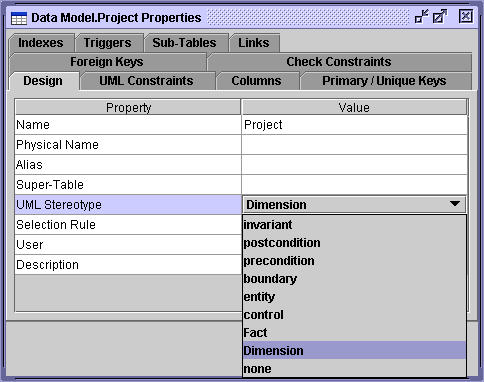

UML Stereotypes
The stereotypes allow you to classify model elements.
Because model elements
belong to at most one category, they cannot have more than one stereotype. Stereotypes
are used to add semantic information to a class or a data diagram. They
can be used to instruct templates or generation modules to treat stereotypes objects
differently (for example, by generating different code).

Adding new Stereotypes
To add a UML stereotype:
- Select UML extensibility and from the edit toolbar click Add > UML stereotype.
- Change the default name by overwriting it. Press Enter.

Stereotyping a model element
In the object’s properties window (for example, table or class), choose a stereotype
from the UML stereotype pop-up menu.

Stereotypes display
Although you can stereotype any model object, only the following objects allow stereotype
display: classes, packages, tables, fields, methods, associations and association
ends.
The stereotype’s name is displayed within double quotes. If an icon is bound to an
object, this icon will also be displayed for classes, tables and packages.
Stereotype inheritance (advanced)
A stereotype can inherit from another stereotype. For a stereotype to inherit from a
super-stereotype:
- Display the stereotype’s properties window
- Select the super-stereotypes tab
- Click Add